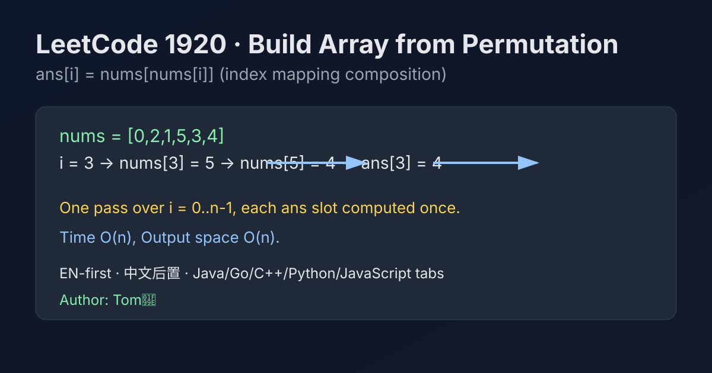

LeetCode 1920: Build Array from Permutation (Index Mapping Composition)
LeetCode 1920ArraySimulationPermutationToday we solve LeetCode 1920 - Build Array from Permutation.
Source: https://leetcode.com/problems/build-array-from-permutation/

English
Problem Summary
Given a zero-based permutation nums of length n, build an array ans such that ans[i] = nums[nums[i]] for each index i.
Key Insight
This is direct function composition on indices. Treat nums as a mapping f(i)=nums[i], then answer is f(f(i)).
Brute Force and Limitations
There is no cheaper-than-linear shortcut because every output position must be produced at least once. The straightforward one-pass construction is already optimal.
Optimal Algorithm Steps
1) Create ans with length n.
2) For each i from 0 to n-1, set ans[i] = nums[nums[i]].
3) Return ans.
Complexity Analysis
Time: O(n).
Space: O(n) for the output array (excluding output, extra working memory is O(1)).
Common Pitfalls
- Misreading as ans[i] = nums[i].
- Forgetting array is zero-based permutation.
- Using nested loops unnecessarily.
Reference Implementations (Java / Go / C++ / Python / JavaScript)
class Solution {
public int[] buildArray(int[] nums) {
int n = nums.length;
int[] ans = new int[n];
for (int i = 0; i < n; i++) {
ans[i] = nums[nums[i]];
}
return ans;
}
}func buildArray(nums []int) []int {
n := len(nums)
ans := make([]int, n)
for i := 0; i < n; i++ {
ans[i] = nums[nums[i]]
}
return ans
}class Solution {
public:
vector<int> buildArray(vector<int>& nums) {
int n = nums.size();
vector<int> ans(n);
for (int i = 0; i < n; ++i) {
ans[i] = nums[nums[i]];
}
return ans;
}
};class Solution:
def buildArray(self, nums: List[int]) -> List[int]:
n = len(nums)
ans = [0] * n
for i in range(n):
ans[i] = nums[nums[i]]
return ansvar buildArray = function(nums) {
const n = nums.length;
const ans = new Array(n);
for (let i = 0; i < n; i++) {
ans[i] = nums[nums[i]];
}
return ans;
};中文
题目概述
给定一个长度为 n 的 0-based 排列数组 nums，构造数组 ans，满足 ans[i] = nums[nums[i]]。
核心思路
把 nums 看成下标映射函数 f(i)=nums[i]，题目要求的就是复合映射 f(f(i))，直接按定义写即可。
暴力解法与不足
这题不需要复杂优化：每个位置都必须算一次，单次遍历已经是最优数量级。任何多重循环都只是增加常数和复杂度。
最优算法步骤
1）申请长度为 n 的结果数组 ans。
2）遍历 i=0..n-1，令 ans[i] = nums[nums[i]]。
3）返回 ans。
复杂度分析
时间复杂度：O(n)。
空间复杂度：O(n)（结果数组；不计输出时额外空间为 O(1)）。
常见陷阱
- 把公式写成 ans[i] = nums[i]。
- 忘记题目是 0-based 排列。
- 误用双层循环导致不必要开销。
多语言参考实现（Java / Go / C++ / Python / JavaScript）
class Solution {
public int[] buildArray(int[] nums) {
int n = nums.length;
int[] ans = new int[n];
for (int i = 0; i < n; i++) {
ans[i] = nums[nums[i]];
}
return ans;
}
}func buildArray(nums []int) []int {
n := len(nums)
ans := make([]int, n)
for i := 0; i < n; i++ {
ans[i] = nums[nums[i]]
}
return ans
}class Solution {
public:
vector<int> buildArray(vector<int>& nums) {
int n = nums.size();
vector<int> ans(n);
for (int i = 0; i < n; ++i) {
ans[i] = nums[nums[i]];
}
return ans;
}
};class Solution:
def buildArray(self, nums: List[int]) -> List[int]:
n = len(nums)
ans = [0] * n
for i in range(n):
ans[i] = nums[nums[i]]
return ansvar buildArray = function(nums) {
const n = nums.length;
const ans = new Array(n);
for (let i = 0; i < n; i++) {
ans[i] = nums[nums[i]];
}
return ans;
};
Comments